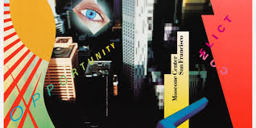

Environmental & Spatial Design

Wilshire Boulevard Temple
Large-scale environmental graphics integrating architecture with digital imagery
This project demonstrated how digital design could scale to architectural proportions while maintaining visual coherence and emotional impact.
Greiman's approach to environmental graphics considered movement through space, changing perspectives, and the integration of light and material.